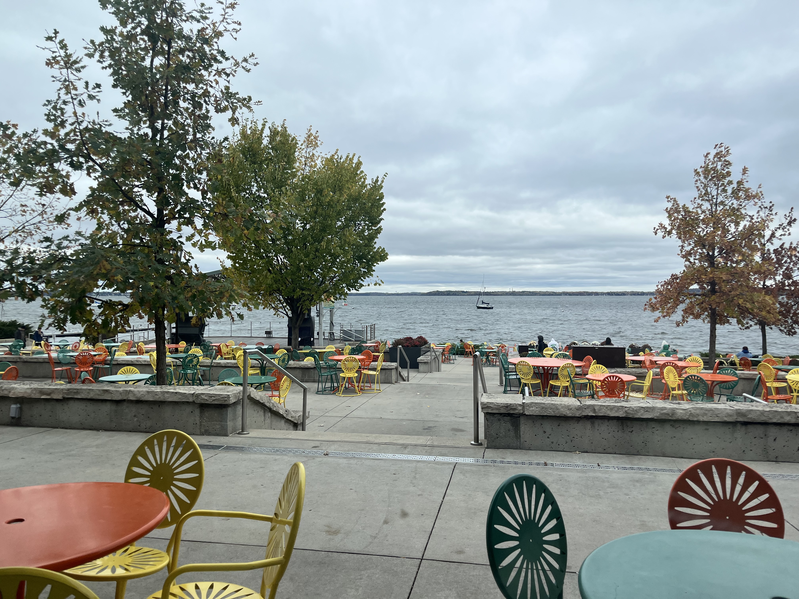
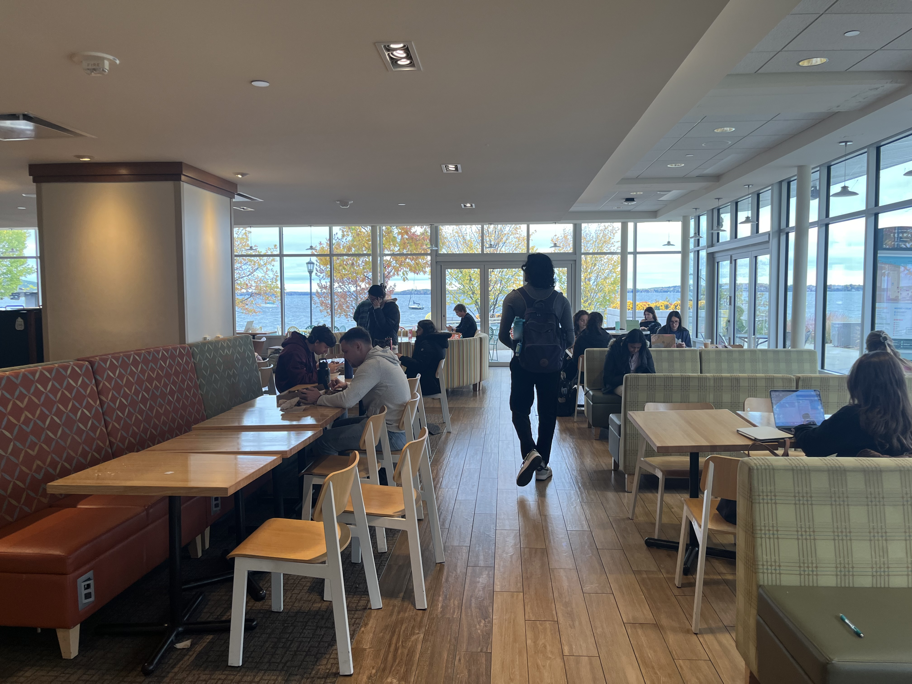

A beautiful and popular place to study right on Lake Mendota.
Memorial Union is a popular study location for many students. Offering a beautiful view of Lake Mendota, it is a breathtaking place to study. Furthermore, it also offers a variety of study locations such as outside on the terrace, in the Rathskellar, main seating area, and more. One of the best features of studying at Memorial Union is the large variety and convenience and availability of food to eat during long study sessions. One negative is that it is often one of the most busy places on campus because it is filled with not only students, but also visitors. This can be helped by studying on upper floors of Memorial Union because I have noticed that they tend to be less busy.
Studying outside on the Terrace chairs is wonderful but certainly a seasonal place. The chairs are taken out mid-fall and return mid-spring. The Summer is a great time to be out on the Terrace, but very busy all Summer long! Lake Mendota during sunset is a beautiful time to be at the Terrace. Keep in mind studying outside comes with its own challenges such as wind, screen glare, and bugs.